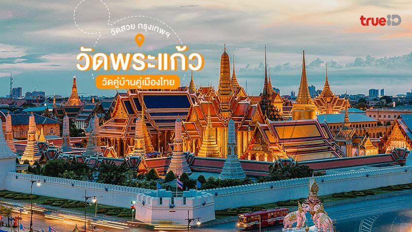
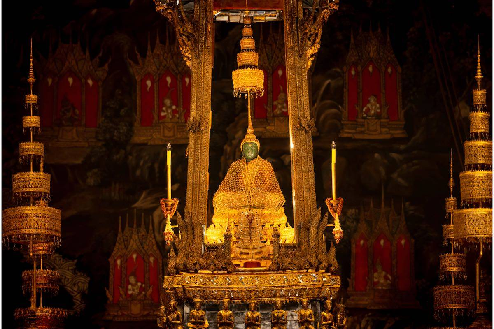
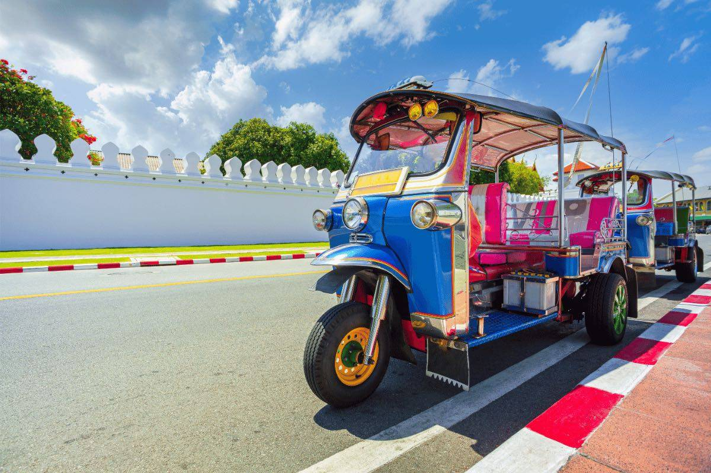

วัดพระแก้ว เป็นวัดสำคัญอันดับต้น ๆ ของไทย และเป็นแหล่งท่องเที่ยวทางวัฒนธรรมที่นักท่องเที่ยวไม่ควรพลาดเมื่อมาเยือนกรุงเทพฯ.
ประวัติของ วัดพระแก้ว
วัดพระศรีรัตนศาสดาราม สร้างขึ้นปี พ.ศ. 2325 พร้อมการสถาปนากรุงรัตนโกสินทร์ เพื่อประดิษฐานพระแก้วมรกตและเป็นที่ทรงบำเพ็ญพระราชกุศล วัดนี้ไม่มีพระสงฆ์จำพรรษา เพราะมีเฉพาะพุทธาวาส ไม่มีสังฆาวาส
เรื่องน่ารู้เกี่ยวกับ พระแก้วมรกต
พระแก้วมรกต พระพุทธรูปศักดิ์สิทธิ์ประดิษฐานในวัดพระแก้ว โดดเด่นด้วยเครื่องทรง 3 ฤดู จิตรกรรมฝาผนังพุทธประวัติและรามเกียรติ์งดงาม ควรค่าแก่การชม ใกล้เคียงยังมีวัดอรุณและวัดโพธิ์ให้แวะต่อได้
วิธีเดินทางไป วัดพระแก้ว
การเดินทางไปวัดพระแก้วสามารถนั่งรถเมล์จากสยามแสควร์ (สาย 15, 25, 508) ลงที่สนามหลวง หรือเลือกแท็กซี่ วินมอเตอร์ไซค์ ตุ๊กตุ๊ก และ Grab ใช้เวลา 20–50 นาทีตามการจราจร หากมองหาที่พักสะดวกใกล้การเดินทางและแหล่งช้อปปิ้ง แนะนำ Novotel Siam Square ที่มีสิ่งอำนวยความสะดวกครบ วัดพระแก้วจึงเป็นสถานที่ท่องเที่ยวสำคัญในกรุงเทพฯ เต็มไปด้วยประวัติศาสตร์ ศิลปะ และวัฒนธรรมที่ควรค่าแก่การชม